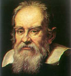

 This is a portrait of Galileo (1564-1642) by Justus Sustermans, made near the end of Galileo's life.
In the summer of 1609, while in Venice to visit some friends, Galileo heard about the invention in Holland of a ``spyglass'' that could make distant objects appear near. Galileo set about to re-invent it independently. Having constructed a telescope of about twenty power, he turned it on the sky and rapidly made several key discoveries.